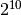

Un poco de background¶
La idea de este documento no es brindar explicaciones exhaustivas ni servir de referencia absoluta de ninguno de los temas necesarios para poder encarar un proyecto como este. Se pretende, simplemente, ofrecer un material de apoyo a otros documentos orientado a las necesidades de este proyecto.
En consecuencia, se asume que el lector tiene conocimientos previos acerca de la arquitectura IA-32, que ha tenido cierta experiencia previa programando en algún dialecto de assembly para dicha arquitectura y que está dispuesto a buscar en otros textos lo que no pueda encontrar aquí.
La arquitectura en la que se basará este proyecto es la arquitectura IA-32 de Intel, por lo que todos los detalles de bajo nivel se orientarán a esta.
La secuencia de arranque¶
En las computadoras compatibles con IBM PC, luego de encender la máquina, tiene lugar la carga y ejecución de un programa, que reside en una memoria especial de la computadora, llamado BIOS (Basic Input/Output System). Generalmente, el BIOS realiza chequeos y/o inicializaciones en el hardware y, si todo va bien, busca un dispositivo del que pueda arrancar, siguiendo un orden de arranque que especifica con qué dispositivo debe intentarse arrancar primero.
La forma que tiene el BIOS de verificar si puede arrancar de un cierto dispositivo depende del estándar adoptado por este último. Para el caso de los discos floppy o discos rígidos, la manera que tiene el BIOS de saber si puede arrancar de ellos es verificando si los últimos dos bytes del primer sector del dispositivo contienen la firma 0xAA55. [1]
Cuando encuentra que puede arrancar de uno de los dispositivos, entonces copia desde él alguna pieza de código a memoria y comienza a ejecutarla. En el caso de los discos floppy o rígidos, lo que se copia es el primer sector, que suele tener un tamaño de 512 bytes, y se lo ubica a partir de la dirección física 0x7C00.
| [1] | Para el caso de los CDs, por ejemplo, la especificación que se sigue es otra. |
El bootloader¶
En casi cualquier caso, el código y los datos que carga el BIOS desde el dispositivo suele ser escaso. Por ejemplo, los 512 bytes que se cargan de un disco floppy o rígido no alcanzan para albergar un sistema operativo con un mínimo de funcionalidad, por mucho que uno quiera.
Lo que suele ocurrir, entonces, es que esa pieza de código, de algún modo, se ocupa de cargar el resto del sistema operativo en memoria. Eso se puede lograr en un paso, siendo ese primer código el responsable directo de la carga del resto del sistema operativo, o, más comúnmente, en dos o más pasos encadenados, haciendo que el primer código cargue otra pieza de código que sí se ocupe de cargar el sistema operativo o cargue otra pieza de código que continúe con la cadena. A las piezas de código que se ocupan de cargar el sistema operativo se las llama bootloader.
El bootloader puede hacerse tan sofisticado como se quiera: desde una pieza de código sencilla que copia una pieza fija de código del dispositivo a memoria, a un cargador complejo, en varias etapas, capaz de entender varios sistemas de archivos, preparar un entorno inicial para el sistema, permitir elegir entre varios sistemas operativos existentes para arrancar, etc.
Existe una cantidad de bootloaders disponibles, cada uno de ellos con características propias. Es común, entonces, utilizar uno de los ya existentes, en lugar de escribir el propio, cuando alguno de ellos se adapta a las necesidades del desarrollador.
GRUB¶
Uno de los bootloaders más populares es GRUB. Las versiones de GRUB suelen dividirse en las categorías “Legacy” (hasta 0.97) y GRUB 2. En la actualidad, las versiones de GRUB más usadas, y sobre las que existe más documentación, son las “Legacy”.
GRUB sigue una especificación llamada Multiboot [Multiboot]. Esta especificación deja en claro, entre otras cosas, cuál es el estado de la máquina una vez cargado el sistema operativo y qué información puede pedirle este último al bootloader acerca del hardware.
La arquitectura¶
Modos de operación¶
La arquitectura IA-32 tiene los siguientes modos de operación:
Modo real: El modo real preserva el entorno del viejo Intel 8086, con algunas extensiones, como las que permiten un cambio de modo. Es el modo en el cual arranca cualquier máquina de esta arquitectura.
En este modo, los únicos registros de propósito “general” disponibles son AX, BX, CX, DX, BP, SI, DI y SP, todos de 16 bits.
Para el acceso a memoria, se utiliza segmentación. Las direcciones se resuelven a partir de un registro de
 y un
y un  a través
del siguiente cálculo:
a través
del siguiente cálculo:  . Es decir, los
registros de segmento sólo contienen información acerca del comienzo
de un segmento, pero no imponen un límite ni permisos. El espacio de
direcciones en modo real es de
. Es decir, los
registros de segmento sólo contienen información acerca del comienzo
de un segmento, pero no imponen un límite ni permisos. El espacio de
direcciones en modo real es de  direcciones.
direcciones.Modo protegido: El modo protegido es “el modo de operación nativo del procesador” de la arquitectura IA-32, según los manuales de Intel. Este modo permite trabajar con un espacio de direcciones mucho mayor y, en procesadores modernos, brinda mecanismos de protección de memoria y anillos/niveles de ejecución.
En modo protegido se cuenta con los registros de próposito “general” de 32 bits EAX, EBX, ECX, EDX, ESI, EDI, EBP y ESP.
Los mecanismos de protección de memoria disponibles son segmentación y páginación. Para la primera, los registros de segmento representan selectores de segmento y proveen más información que los registros de segmento en modo real.
Existe un pseudo-modo virtual-8086, que de momento no interesa.
Modo de “gestión del sistema”: Por ahora no me interesa, pero básicamente es un modo que permite atender mensajes o alarmas de las que el sistema avisa a través de interrupciones.
El siguiente gráfico muestra, para los modos mencionados, las maneras de pasar de uno a otro:
![digraph modos {
nodesep=1.7
"Modo real" -> "Modo protegido" [label="PE=1"];
"Modo real" -> "Modo de 'gestión del sistema'" [label="SMI#"];
"Modo protegido" -> "Modo real" [label="Reset o PE=0"];
"Modo protegido" -> "Modo de 'gestión del sistema'"
[label="SMI#"];
"Modo de 'gestión del sistema'" -> "Modo real"
[label="Reset o RSM"]
"Modo de 'gestión del sistema'" -> "Modo protegido"
[label="RSM"]
}](images/graphviz-140b19169261630e132303935c7e911eb3081495.png)
Administración de memoria¶
En la arquitectura IA-32 la administración de la memoria se realiza gracias a las unidades de segmentación y paginación. Cuando la máquina se encuentra en modo protegido, con la paginación de memoria activada, puede pensarse en la existencia de tres tipos de direcciones, como muestra la siguiente figura:
![digraph direcciones {
rankdir=LR
"dirección virtual" [shape=box]
"dirección lineal" [shape=box]
"dirección física" [shape=box]
"dirección virtual" -> "dirección lineal"
[label=<<font point-size="12">unidad<br />de segmentación</font>>];
"dirección lineal" -> "dirección física"
[label=<<font point-size="12">unidad<br />de paginación</font>>];
}](images/graphviz-d1a7ca048f0c3c3fbc239a74b5d8225d2812b055.png)
La dirección virtual es la dirección a la que se hace referencia generalmente desde el código. Consiste en un selector de segmento y un offset. Al pasar por la unidad de segmentación, esta dirección se transforma en una dirección en un espacio de direcciones lineal (sin segmentos). Cuando el mecanismo de paginación se encuentra desactivado, esta dirección coincide con la dirección física, es decir, con la dirección que se impondrá en el bus de direcciones de la máquina. Si el mecanismo de paginación está activado, entonces la dirección lineal sufrirá una traducción más antes de llegar a ser una dirección física.
El caso descripto en el párrafo anterior es un caso optimista. En realidad, cualquiera de las dos unidades puede abortar la traducción (y dar cuenta de ello al sistema operativo) si ocurre una falla de protección.
Segmentación¶
Si bien en la actualidad la segmentación sigue siendo utilizada como mecanismo de protección de memoria, muchos sistemas operativos modernos prefieren delegar esta tarea al mecanismo de paginación de memoria.
No obstante, la segmentación no puede ser desactivada en la arquitectura IA-32, en ninguno de sus modos. ¿Cómo hacen entonces los sistemas operativos modernos (que no precisan de la segmentación) para desactivarla? En realidad, no la desactivan. Utilizan el llamado “Modelo flat de segmentación”, que consiste en ubicar a todos los segmentos ocupando todo el espacio direccionable, desde la dirección cero. De este modo, se logra que las direcciones virtuales coincidan con las direcciones lineales.
Las tablas GDT y LDT están compuestas por descriptores de segmentos. Cada uno de ellos indica la posición y el tamaño de un segmento, junto con otros atributos de este. El descriptor de segmento tiene 64 bits de tamaño y la siguiente estructura:
| Base 31:24 | G | D/B | L | AVL | Limit | P | DPL | S | Type | Base 23:16 |
|---|---|---|---|---|---|---|---|---|---|---|
| 31..24 | 23 | 22 | 21 | 20 | 19..16 | 15 | 14..13 | 12 | 11..8 | 7..0 |
| Base 15:00 | Limit 15:00 |
|---|---|
| 31..16 | 15..0 |
Los campos se interpretan según la siguiente tabla:
| Campo | Significado |
|---|---|
| G | El límite se interpreta en unidades de 1B (0) o 4KB (1) |
| D/B | Segmentos de 16 bits (0) o 32 bits (1) |
| L | Código que no es de 64 bits (0) o que es de 64 bits (1) |
| AVL | Es un bit disponible para usar, si se quiere |
| P | Segmento ausente en memoria (0) o presente en memoria (1) |
| DPL | Nivel de privilegio del segmento (de 0 a 3) |
| S | Segmento del sistema (0) o de código/datos (1) |
| Type | Tipo del segmento: si es de datos o de codigo; si es de lectura o escritura/ejecutable. Ver tabla en el manual. Valores típicos: 0010 (Data; Read/Write) y 1010 (Code; Execute/Read)) |
| Limit | Representa el tamaño del segmento menos uno, y se interpreta según el valor del bit G |
Además, cuando el bit P se encuentra en 0, el formato del descriptor de segmento cambia, dejando varios bits disponibles para que los aproveche el sistema operativo, por ejemplo, para almacenar información acerca de dónde puede encontrarse la información del segmento.
Paginación¶
En la arquitectura IA-32 la paginación puede activarse una vez hecho el cambio a modo protegido. Cuando se encuentra activada, y se utilizan páginas de 4KB, la dirección lineal es dividida en tres partes por la unidad de paginación:
| índice en el directorio de páginas | índice en la tabla de páginas | offset |
|---|---|---|
| 10 bits | 10 bits | 12 bits |
El primero de los tres campos representa un índice en el directorio de páginas. El directorio de páginas es una tabla que contiene  entradas (una por cada índice posible). Cada entrada, además de varios atributos, contiene la dirección física de una tabla de páginas. El sistema de paginación utiliza el primer campo para seleccionar una de las entradas en el directorio de páginas (Page Directory Entries o PDEs). Consecuentemente, se obtendrá la dirección física de la tabla de páginas asociada a dicha entrada.
El segundo campo es utilizado, entonces, para elegir una de las entradas de la tabla de páginas mencionada. Las entradas en la tabla de páginas (Page Table Entries o PTEs) contienen, además de varios atributos, la dirección física de una página en memoria. El offset es utilizado para seleccionar uno de los bytes en dicha página.
El formato de los PDEs, cuando se usan páginas de 4KB, es el siguiente:
| PT Base | AVL | PS | AVL | A | PCD | PWT | U/S | R/W | P |
|---|---|---|---|---|---|---|---|---|---|
| 31..12 | 11..8 | 7 | 6 | 5 | 4 | 3 | 2 | 1 | 0 |
Y los campos se interpretan según la siguiente tabla:
| Campo | Significado |
|---|---|
| PT Base | Dirección física de la tabla de páginas |
| AVL | Está disponible para usar, si se quiere |
| PS | Si CR4.PSE es 1, indica si las páginas son de 4KB (0) o 4MB (1); si no, se ignora (se usan páginas de 4KB) |
| A | Indica si la página/tabla fue accedida (1) o no (0) |
| PCD | Indica si la página/tabla puede ser cacheada (0) o no (1) |
| PWT | Indica si se realizará write-through (1) o write-back (0) de la página/tabla |
| U/S | Indica si el nivel de privilegios asignado a la página es de supervisor (0) o de usuario (1) |
| R/W | Indica si la página es de sólo lectura (0) o puede leerse y escribirse (1) |
| P | Indica si la página/tabla está ausente (0) o presente (1) en memoria |
El formato de los PTEs, es el siguiente:
| Page Base | AVL | G | PAT | D | A | PCD | PWT | U/S | R/W | P |
|---|---|---|---|---|---|---|---|---|---|---|
| 31..12 | 11..9 | 8 | 7 | 6 | 5 | 4 | 3 | 2 | 1 | 0 |
Y los campos se interpretan según la siguiente tabla:
| Campo | Significado |
|---|---|
| G | Si CR4.PGE es 1, determina si la traducción es “global” |
| PAT | Si PAT está soportado, determina el tipo de memoria usado para acceder a la página |
| D | Indica si el software escribió en la página referenciada |
Los campos que no se hallan en esta tabla se interpretan de manera análoga al caso del PDE.
Referencia de NASM¶
Directivas del preprocesador¶
- define A x
- define f(x1, x2, ...) y
- Permite definir macros en una sola línea. Funciona de manera similar a las macros de C, por lo que también posibilita crear macros con “parámetros”.
Directivas del ensamblador¶
- BITS m
Indica que el código a continuación de la directiva debe generarse para procesadores operando en modo de m bits, donde m puede ser 16, 32 o 64.
Para el modo de salida bin, que es el que usamos para el bootloader, se puede asumir por omisión que m es 16. Sin embargo, siempre es buena práctica ser explícitos con esto, en lugar de asumir valores por omisión.
- ORG addr
- Hace que NASM asuma que la dirección de memoria addr es la dirección en la que ha sido cargado el programa. NASM utiliza esta dirección como base para todas las referencias internas en una sección de código.